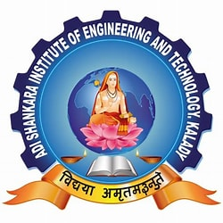

ADI SHANKARA INSTITUTE OF ENGINEERING AND TECHNOLOGY,KALADY
COURSES
-
The undergraduate programmes at Adi Shankara Institute of Engineering and Technology are affiliated with APJ Abdul Kalam Technological University (KTU), Kerala.
The B.Tech degree is a 4-year (8-semester) programme in Engineering and Technology.The institute offers nine B.Tech programmes,
with five of these programmes(all eligible programmes - CE, CS, ECE, EEE, ME) being accredited by the National Board of Accreditation (NBA).
-
MBA
The College has a well placed MBA department with 100 placement assistance to all the students.
Specializations in Finance, Human Resource Management, Marketing & Operations Management
MCA
The institute offerts MCA with a well experienced faculty,smart classroom and computer lab
Major recruiters include TCS,Infosys,IBS software.IBM